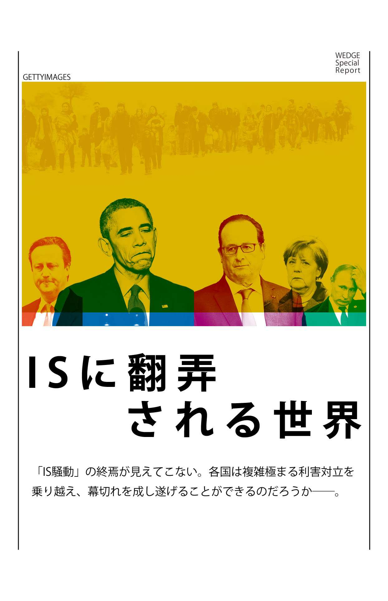
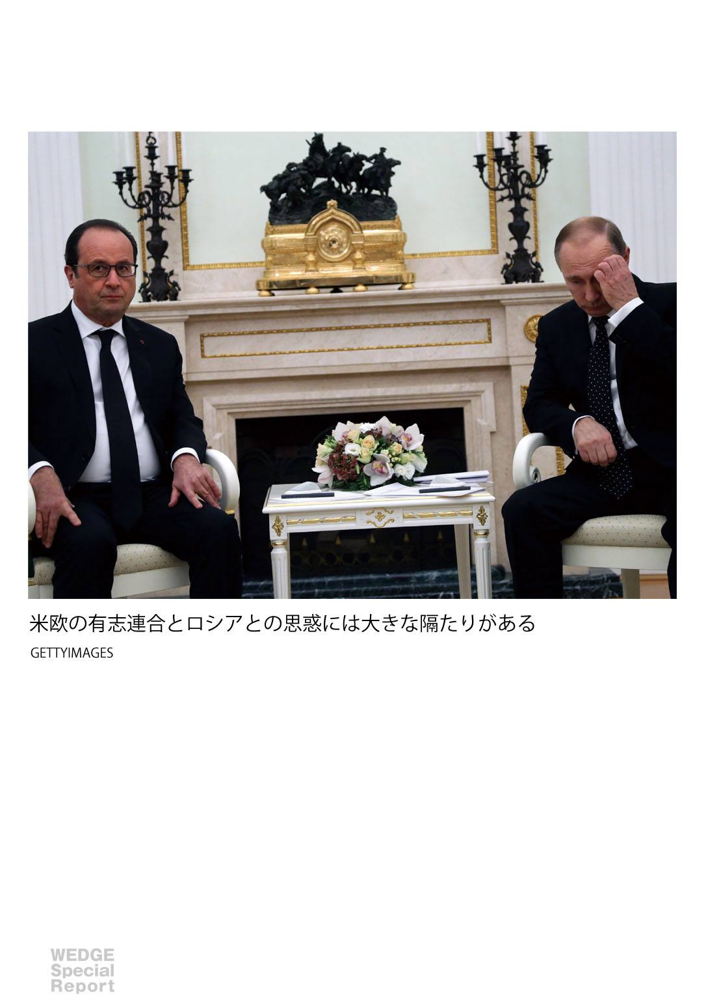
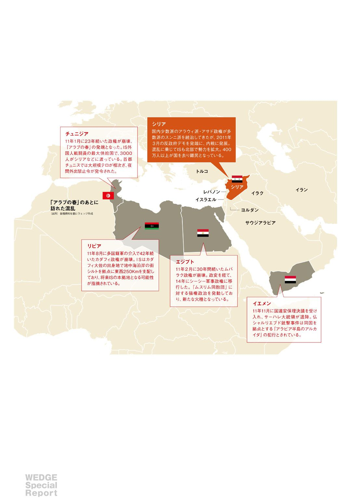
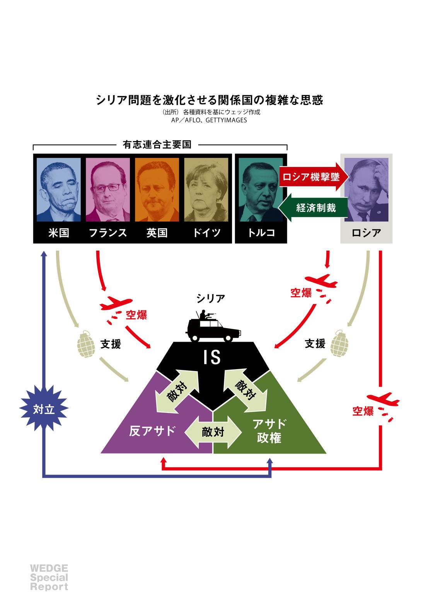
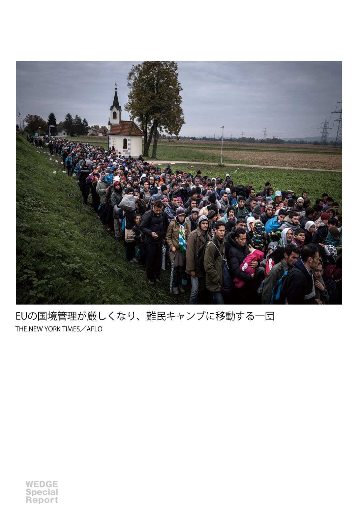
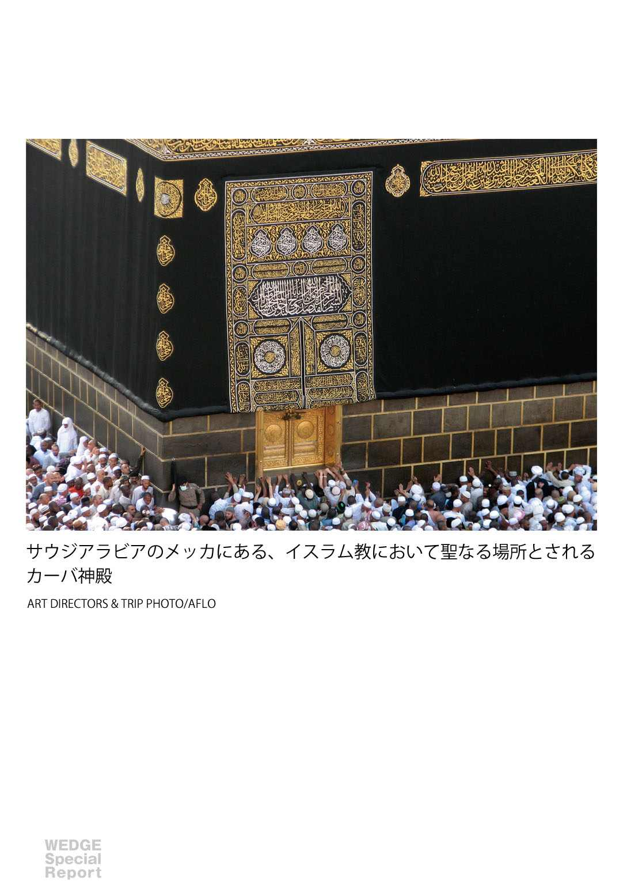
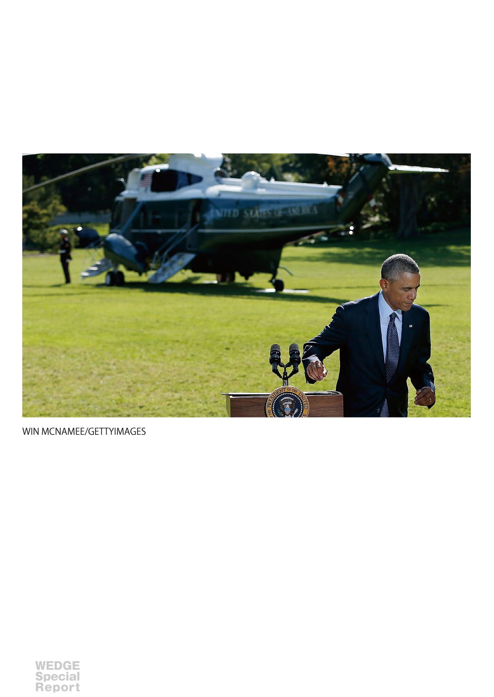
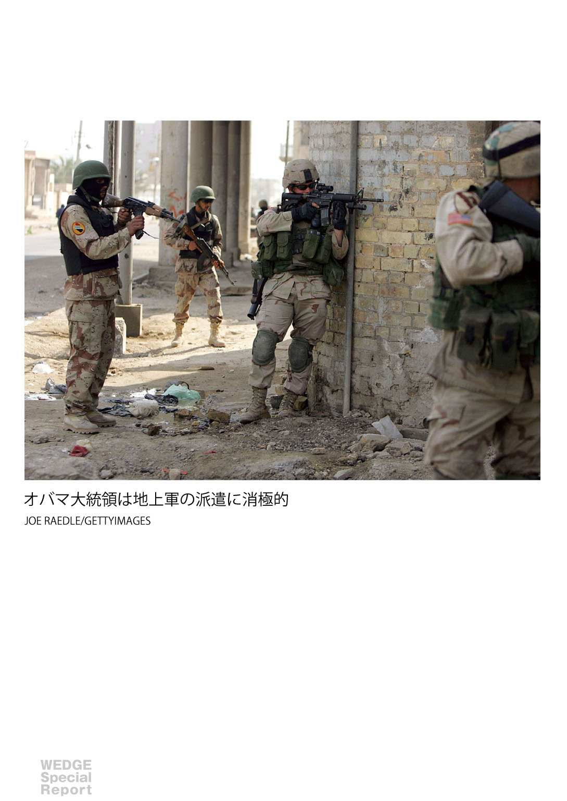
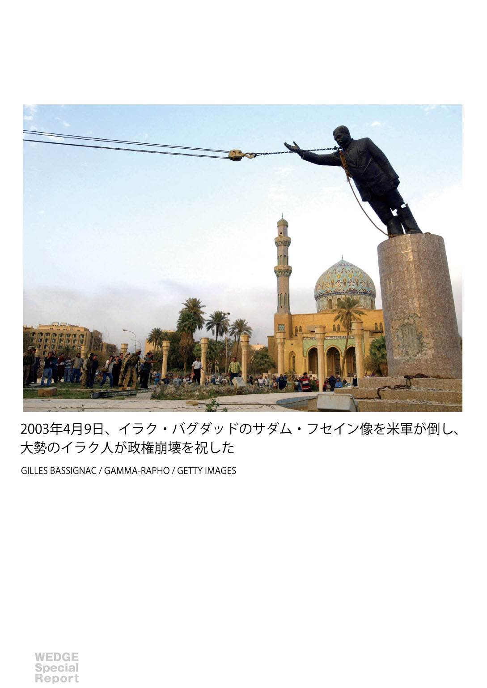
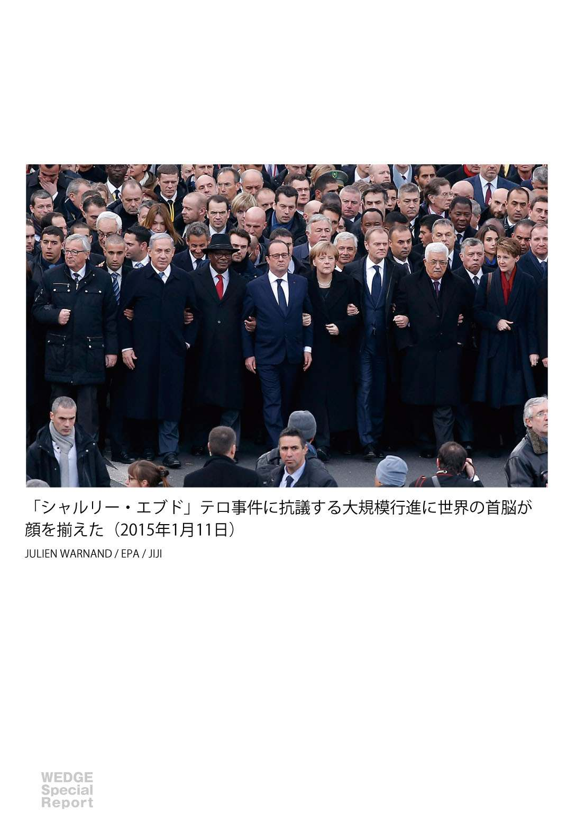

| ISに翻弄される世界 Wedgeセレクション | |
| 中西輝政 & 保坂修司 & マイケル・シン & 佐伯啓思 | |
| (2016) | |
初 出：月刊『Wedge』２０１６年１月号に掲載された記事を一部編集したものです。記事中の事実関係、データ、肩書き等は掲載当時のものです。
［表紙画像］militant website/AP/アフロ
目次
■THE CHANGE IN WORLDS POWER STRUCTURE
文・中西輝政
■ISLAMIC WORLD-HOW TO PREVENT TERRORISM
文・保坂修司
■THE BEST SCENARIO FOR USA
文・マイケル・シン
■THE LIMITS OF WESTERN CIVILIZATION
文・佐伯啓思

THE CHANGE IN WORLDS POWER STRUCTURE
足並み揃わない大国
Ｇゼロ時代の混沌は続く
湾岸戦争から四半世紀、米国一極時代の終焉とともに世界は無秩序化した。覇権国であった米国は身の丈にあった外交に転換できず、シリア内戦を激化させている。
文・ 中西輝政 京都大学名誉教授
２０１５年は組織化されたテロ集団「Islamic State」（ＩＳ）が日本をはじめ世界を揺さぶった１年であった。特に11 月13 日のフランス・パリの同時多発テロは、無抵抗の一般市民を無差別に狙うという、残虐極まりない衝撃的な事件であった。（11 ・13 は、第一次世界大戦後の１９１８年に英仏がカリフ国家＝オスマン・トルコ帝国の首都を軍事占領した日であり、イスラム過激派のＩＳがこのイスラム史における「屈辱の日」に合わせてパリでのテロを決行したとされる。）
今回の対テロ作戦の国際的な取り組みは、米国のイニシアティブが大きく低下している点で、01 年の米国同時多発テロの時とは根本的に異なっており、この15 年間の国際政治や国際秩序の構造変化を如実に示している。今や、米露英仏など世界の大国が対テロ作戦で求心力を示しうるのか、あるいは互いに足を引っ張り合うことで遠心力が働くのか、はたまた全く新しい国際的な取り組み方を見出すのか、16 年はその分岐点になるだろう。
国際情勢を見通すには、日々のニュースを追いかけ、短期的かつ当面の懸案解決的な視点だけで見るのではなく、それらの構造的要因、例えば各国の客観的な国益や、国内政治状況、地政学、歴史的背景、外交的な親密さなどの要因を理解する必要がある。さらには人権や民主主義といった国家のアイデンティティを形成する理念や価値観に加え、グローバル化など時代の潮流も踏まえ大局観をもって洞察することも忘れてはならない。とくに今日、混迷を極める中東情勢の展開を読み解くには、複雑に絡み合った諸大国の思惑を紐解くことが不可欠である。
パリ同時テロを受けて世界のメディアは「反テロ・反ＩＳ」で結束が強まっているが、他方シリア問題を巡っては、逆にこれまで隠れていた大国間の対立構造が浮き彫りになってきた。フランスのオランド大統領は欧米露の大連合構築に乗り出し、欧米諸国を精力的に歴訪したが、なかでも11 月26 日のモスクワでの仏露首脳会談は、対ＩＳ作戦だけでなく、シリア情勢全般にも大きな影響を及ぼす出来事であった。

息を吹き返したロシア 中東で膨らむプーチンの野望
プーチン大統領は、一応反テロ連合の必要性を認め、米国を中心とする有志連合との協力姿勢を示したが、有志連合の一員たるトルコがロシア軍機を撃墜したことから、共同作戦の実施やロシアを含む大連合の構築については踏み込まなかった。それどころか、アサド政権の存続を強く訴えてロシアと有志連合との溝が改めて浮き彫りになった。
プーチンはまた、対ＩＳ作戦の遂行には地上軍の投入が不可欠だと指摘し、ロシア軍の投入にも意欲を示した。これはシリアへの地上軍投入を拒み、シリア内戦の現在の惨状を招いた米国に対するロシアの力の誇示と抜本的な解決策の突き付けである。湾岸戦争やイラク戦争で果たしてきた米国の役割を、今回の対ＩＳ作戦やシリア問題では、今やロシアが代わって主導権を握ってもいいぞ、というプーチンの意志表示でもある。
そもそも今回ロシアがこれほどアサド政権の存続に拘り、シリアへの介入を続けるのはなぜか。シリア国内のロシア利権を維持するためという見方もあるが、最大の目的は米国主導のＮＡＴＯ（北大西洋条約機構）の地位を低下させ、欧米を分断することに他ならない。ＥＵは今回初めて集団的自衛権の行使を決定したが、本来西側の安全保障を担うはずのＮＡＴＯには要請をしていない。ロシアを対テロ作戦に取り込むためのオランドの配慮だが、まさにプーチンの思惑通りである。
さらにプーチンは壮大な戦略を描いている。10 年末に始まったチュニジアのジャスミン革命を皮切りに、中東・北アフリカで民主化運動「アラブの春」により大変動が起きたのは記憶に新しい。しかしその後、民主国家が根付く前にリビアは破綻国家と化し、エジプトは軍事政権に移行し、イエメンではテロと内戦が却って活発化するなど、いずれも民主化前の長期独裁政権の時よりも不安定な状態に陥っている。
こうした中、民主化運動がかつてない悲惨な内戦につながったのがシリアである。中東におけるロシアの権益の受皿となってきたアサド政権を守り、そこを拠点に不安定化した中東の秩序をロシア主導で再構築する。まさに中東の地図を描き直すという大戦略だ。グルジア侵攻、クリミア半島併合、シリア介入というロシアの行動からは、「偉大なるソ連の復興」というプーチンの野望がはっきりと見える。
一方、米国のシリアへの関与は、アサド政権の退陣を一貫して求め、形ばかりの空爆で対処するだけで、実質的な解決への道筋を描くことをしてこなかった。こうしたオバマ政権の無責任で頑なな姿勢が、シリア内戦がここまで激化した要因の一つに挙げられる。

パリのテロ後、米国のオバマ大統領は米仏首脳会談で、ＩＳ打倒を標榜しながらアサド政権を支援するロシアとの協力には始めから否定的な考えを示した。また、プーチンが提案した地上軍の投入も、米大統領選挙を控えたこの時期に、大きく舵を切ることは非現実的である。
米国の力が冷戦後ピークだった頃、ブッシュＪｒ政権の９・11 後の対応が「行動する単独主義」だとしたら、今日のオバマ政権のシリアへの対応は「行動しない単独主義」、つまりかつてない孤立主義の志向と言える。米国一極時代が終わっても、依然として「自由と民主主義」の理念のみに固執した非妥協的な行動様式である。
これはオバマ政権の特殊事情なのか、それとも米国外交の大きな方向性を示しているのかは、次期政権の外交方針を見てみないと判然とはしないが、確かなことは、米国がこのスタンスを貫く限り、シリアの混乱は収束しないということだ。
英国は、イラク戦争の苦い過去から、これまでシリア攻撃には慎重な姿勢をとっていたが、同時テロという安全保障上の脅威に晒されたことで、これまでイラクに限定して行ってきたＩＳへの空爆をシリアにも拡大させ、有志連合としての一体感を強めた。
しかし、英国はＥＵに、より大きな遠心力を働かせる恐れがある。17 年までに行われるＥＵ脱退の是非を問う国民投票を控える中、難民・テロ問題を受けて、ＥＵ脱退への気運が一層高まっている。
さらにＥＵでは難民受け入れ問題を巡り、各国の利害のぶつかり合いも顕在化した。国境管理を強化して難民を押し付け合っており、域内国境での検査をなくして自由な往来を実現した「シェンゲン協定」は既に形骸化している。共同体統合の理念は一時の夢として儚くも消え去るだろう。
さらにフランスを始めＥＵでは右派が台頭し、移民排斥へと傾斜しているが、これはＩＳ勢力の欧州分断作戦を増長させるだけで、ＩＳの思惑通りに事が進んでいる。
米露が歩み寄りを見せず、ＥＵに遠心力が働く中、欧米が世界的な求心力を取り戻せるか。その鍵を握るのはドイツである。メルケル首相はウクライナ問題やギリシャ危機、シリア難民の受け入れなど、昨今の重要案件には常に中心的な役回りを果たしてきた。
ドイツは米英仏とは違いアラブ諸国とも比較的良好な関係を築いており、ＩＳ掃討に期待がかかるクルド勢力ともパイプがある。またメルケルは米英仏のように反アサド一点張りではないため、本音ではロシアと連携しながら、アラブの信頼を受けて主要な役回りを果たしたいはずだが、当然、「ロシアと組む」ことによる米英からの孤立は避けたいと考えている。ドイツがこのジレンマを乗り越え、ロシアと米国とを歩み寄らせられるかが、シリア問題の収拾に向けたポイントである。

Ｇゼロ時代に求められる人道的現実主義
ベルリンの壁崩壊以降、この四半世紀で世界は米欧主導の西側陣営に統合されてきたが、今その振り子の揺り戻しが起こっている。この世界史的な反動は少なくとも今後15 年は続くだろう。まさに、世界は「遠心力の時代」に入ったといえる。
背景には世界におけるパワーバランスの変化がある。冷戦後の「パックス・アメリカーナ・パートⅡ」の時代は終わり、その流れは不可逆的である。ＥＵは前述のとおり、共同体の理念や結束が揺らいでいる。一方、中国の台頭は著しく、ソ連崩壊後に塗炭の苦しみを味わったロシアも、強固な内政基盤を築き外交でも息を吹き返してきた。
世界に圧倒的なリーダーが不在である「Ｇゼロ」の時代には、大国が浸る「古きよき時代」の記憶や理念に固執せず、当面の安定を可能とする新たな秩序やシステムを築かなければならない。米国はグローバルな自由と民主主義を、ロシアは偉大なるソ連の復興を、欧州はＥＵ統合のあの「歓喜の時代」を、中国は中華民族の復興という「中国の夢」を追い続けると、いずれ大国間の大きな衝突につながりかねない。
シリア問題の長期化は、大国が今や時代遅れのこうした古い理念を転換せず、現実に即した対処をしてこなかったことに原因がある。勿論、西側が主導してきた理念、すなわち「自由と民主主義」という方向性は間違ってはいない。しかし、その理念が中東に浸透しなかった現状をみると、米欧による軍事力のみに頼るその進め方に深刻な問題があったということだ。
世界秩序が「踊り場」に差し掛かった今こそ、理念に固執することなく、目の前の惨状に対処する人道的な現実主義に転換し、合理的で冷静な判断を下すことが求められている。人道的現実主義により内戦を終結させ、シリア国民が安心して暮らせるシステムを構築することこそ急務である。
パリ同時テロの翌日、オーストリアのウィーンで開催された米露など関係17 カ国外相や国連特使らの協議で、シリア紛争の解決に向けた行程表がようやくまとまった。このウィーン合意では、アサド政権と反体制派の代表らで６カ月以内に「移行政府」を発足させ、17 年５月までに新憲法に則り選挙を行い、新政権を樹立することを目標としている。当然、国民を弾圧するアサド政権が残ることへの反発が米国などにはあるが、人道的現実主義に則ると内戦終結にはこれしかない。
翻って日本はシリア問題にどう関与すべきか。日本が中東政策に直接口を挟むことはできないが、安倍晋三首相はプーチンともトルコのエルドアン大統領とも良好な関係を築いている。ＣＯＰ21 の会場で対立する両国の仲介役を買って出たように、側面的な支援はできる。また、シリア周辺国の大規模な難民キャンプでの人道的な支援も重要だ。さらにシリアの新政府樹立後に、日本としてどのような支援ができるかを検討しておく必要があるだろう。

21 世紀前半の秩序の行方 米国には試練の時代が続く
シリア問題を巡って欧米とロシアの深刻な対立が顕在化したが、この構図はウクライナ問題に端を発したもので、その対立はあたかも冷戦時代に逆戻りし、再び妥協不能の深い溝が生じている。それゆえウィーン合意はシリア問題の対症療法に過ぎず、両者が互いに譲らない以上、ウクライナ問題の根本治療は難しい。この米露対立は今後、北朝鮮問題などにも波及する。
さらに、今後10 ～20 年の間はこうした不安定な世界秩序のまま、米国がロシアや中国、インドといった大国と絶えずしのぎを削る時代に入る。パワーバランスは益々多極化していくが、仮に中国とロシアが「手を組む」ようなことがあれば、大国間のパワーバランスは崩れ、米国のアジア太平洋における安全保障力は大きく揺らぐ。こうした事態を防ぐには、米国は頑なな理想主義に陥らず、ロシアに対して時には妥協をし、台頭する中国にはしっかりと対峙するという外交が求められる。ただ、いまだに覇権国の余韻に浸る米国には、この身の丈に応じた外交への転換は容易ではなく、オバマ氏が直面した試練は今後も続くだろう。
さらに大きく、向こう50 年を展望すると世界秩序は大調整の時代を経つつ、人道的な価値観や人権問題、人口問題などの解決能力で世界の模範となる国家の地位が高まり、リーダーシップを発揮することになる。米国一極時代に戻ることはないが、50 年後も軍事力とソフトパワーを兼ね備えた米国が、有力な大国の一つとして存在感を発揮していることは間違いないだろう。
【ＣＯＬＵＭＮ01 】
テロを利用する中国
中国の新疆ウイグル自治区には、トルコ系ウイグル族などによるイスラム国家「東トルキスタン共和国」建国を目指す独立運動がある。中国は９・11 を機に広まった「テロとの戦い」の国際世論を利用し、国内外で独立派の監視を強化してきた。２００２年には米国や国連が「東トルキスタン・イスラム運動」をテロ組織と認め、中国も03 年に上記組織を含む、独立派４組織をテロ組織と認定した。
ＩＳは中国を敵として攻撃を宣言する一方、ジハード（聖戦）を呼びかける中国語の歌のネット配信を始めた。ＩＳ戦闘員として約４００人のウイグル族が中東に渡ったとされている。中国公安省はパリのテロ直後、中国版ツイッター「微博 」で、新疆で警察がテロ分子を攻撃した、と「戦果」を流した。
ISLAMIC WORLD-HOW TO PREVENT TERRORISM
イスラム世界は
ＩＳを収束できるのか
なぜ今、イスラム教に、キリスト教のような「宗教改革」が起きないのか。イスラム研究の第一人者は、イスラムコミュニティーにおける「ソフト・アプローチ」に注目する。
保坂修司 日本エネルギー経済研究所研究理事 聞き手・構成・ Wedge編集部
ＩＳの拡大を食い止めるためには空爆が必要だという方向性は各国でも共有されている。しかし空爆だけでＩＳを壊滅させるのは不可能だ。地上軍を投入すればＩＳを壊滅できる可能性もあるが、投入後にシリアをどのようにしたいかで各国の思惑が異なり、調整できていない。
数年後にＩＳが壊滅している可能性は十分あり得る。理由はＩＳの組織的脆弱性とビジョンの欠如にある。ＩＳが高度に組織化され、財政的にも恵まれているとの見方もあるが、実際には指導者はまったく表に出てこず、資金面の取り締まりも厳しくなっている。ＩＳはイスラム圏を統一し、イスラム法に沿った国家を設立するという使命のもとに活動を続けるが、実際の政治体制や国家建設へのビジョンは幻想の域を出ない。
「イスラム世界がＩＳを収束させるべき」との意見もあるが、「イスラム世界」の定義は曖昧で、主体として動く人が見当たらない。カトリックのように、ローマ教皇が方針を決めれば合意が図れるような世界ではない。サウジアラビアやイランのような大国間でも思惑や利害は全く異なる。
ＩＳのトップであるバグダディはイスラム共同体政教両権の長であるカリフを名乗っている。カリフ制はオスマン帝国の崩壊とともに、事実上消滅した。だが、カリフ制は多くのイスラム教徒にとってイスラム世界の理想を体現しており、カリフによって統治されたイスラム国家樹立という、ＩＳの主張する「崇高な使命」に共感した人たちが世界各国から集まっている。
宗教改革が挫折してきた背景
イスラムの歴史の中では宗教改革とも呼べる運動はしばしば存在した。象徴的なのがサウジアラビアだ。もともと18 世紀半ばに「現在のイスラムは改革しなければならない」と言い出してスタートしたのが国の起源だ。
19 世紀以降もジャマールッディーン・アフガーニーら知識人たちがイスラムを近代化し、欧米の価値観に対応するようなイスラム改革運動を進めた。こうした改革運動は、とかく政府に批判的になるため、弾圧を受けやすく、改革は頓挫してきた。
「アラブの春」は失敗に終わった、中東に民主国家は成立しないと断じるのは早計だ。サダム・フセイン時代ならＩＳの台頭を防げたという声もあるが、あの時代にどれだけのイラク人が殺されたかを考えれば、いつかは倒されるべき政権だった。むしろイラクが「アラブの春」で比較的混乱が少なかった点に注目すべきだ。選挙で政権を選べるメリットに、多くの国民が気づいていたことは忘れてはならない。もちろん、現在は混乱の極みであるが、それは周辺からの影響によるものだ。
過激化した若者への社会復帰プログラムが世界的に注目されている。サウジアラビアでは、テロ未遂で捕まった者に必ずプログラムを受けさせている。内務省、つまり警察の管轄だが、心理学者やイスラム法学者等を巻き込みながら個別に脱洗脳、脱過激化を施す。サウジアラビアでは全体の約９割が成功するといわれている。プログラムを受けるのは、学校をドロップアウトした若い男性、大家族、放任主義、前科あり、が共通パターンだ。時間や資金、労力はかかるが、こうしたソフト・アプローチを進めていくのが「テロを防ぐもっとも効果的な方法」と認識されるようになっている。
テロリストになる者は、事件を起こす前の段階で、ＳＮＳに、社会に対する不満や怒りを書き込むことが多いため、探知はしやすい。英国などでは、過激な書き込みが見つかると、ソーシャルワーカーや心理学者がチームを組んで真摯に相談にのったり、説得したりしている。必要があれば本人に会う等の方法も採られている。
プログラムは今に始まったことではなく、２００５年にロンドンで発生したテロ以降、警察と協力しながらコミュニティー全体で取り組んでいる。英国のイスラム教徒コミュニティーでも、若者の過激化には相当な危機感がある。過激化した若者を捕まえて刑務所に閉じ込めた場合、出所したときに、より悪化するケースも多い。
それほど多くの過激派を生み出しているわけではない国でも、若者の社会復帰に取り組む動きが広まっている。たとえばシンガポールでは、14 年４月に過激思想の影響を受けた若者の社会復帰を議論するシンポジウムが開催された。ＡＳＥＡＮ諸国など18 カ国から５００人以上の専門家や研究者が出席した。長期的視点に立てば、こうした地道な活動を進めていくしかない。

THE BEST SCENARIO FOR USA
「中東からは逃げられない」
オバマが〝次〟に残した教訓
中東での長引く戦争は米国民を疲弊させた。得られた教訓は、米国は中東から手を引いてもその影響からは逃れられない、ということである──。
文・ マイケル・シン ワシントン近東政策研究所マネジング・ディレクター
ＩＳは、はっきり異なるが、相互に関連する２つの脅威を呈している。
第１は、中東の安定に対する脅威だ。ＩＳはシリアとイラクのスンニ派地域を切り出して国家を築こうとし、支配領土拡大のため、南アジアやアフリカなどで植民地を確立するために戦っている。少数派集団を迫害し、攻撃を通じて壮大な難民危機を助長することで地域の諸政府に圧力をかけてきた。
第２に、ＩＳは中東地域の内外にテロの脅威をもたらす。パリ同時テロ、シナイ半島でのロシア機爆破、レバノン、トルコ、チュニジアでのテロ、日本、米国その他多くの国の市民の殺害と関係している。戦闘に参加するよう若者を勧誘するとともに、自国でのテロ実行を鼓舞している。西側諸国は２つ目の脅威に集中してきた。
２０１５年11 月のブルームバーグによる世論調査では、米国民の35 ％が「テロリズム」または「ＩＳ」を米国が直面する最重要問題に挙げた。15 年１月のブルッキングス研究所の世論調査で、米国民の57 ％がＩＳを倒すために「必要なことをすべて行うべき」と回答。矛盾するようだが、テロリストと戦うための地上部隊の派遣に対する支持は、まちまちだった。ブルームバーグの世論調査によると、パリのテロ攻撃の後、米国はイラクやシリアに地上部隊を派遣すべきだと考える米国人は44 ％にとどまっていた。12 月２日にカリフォルニア州で銃乱射事件が発生した直後、世論調査で初めて地上部隊派遣への支持が過半数を超えた。
地上部隊の派遣に消極的な感情はイラクとアフガニスタンでの長引く戦争に対する米国民の疲弊から生まれたものだろう。これを強めるのがオバマ大統領の警告だ。米軍地上部隊はＩＳを倒せるが、イラクとアフガニスタンでの体験が物語るのは、難しい部分はその次に起きること、つまり、ＩＳが支配していた領土を保持し、効果的な地元政府の支配を再確立することだと警鐘を鳴らした。12 月６日の一般国民向け演説でも大規模な地上部隊の派遣を否定した。


この姿勢はＩＳを弱体化させ、最終的に打倒するという大統領の公式目標と折り合いがつかない。大半の観測筋は空爆だけではＩＳを倒すのに不十分だと判断している。
しかし、シリア反政府勢力やアラブ世界の米国の同盟国は、ＩＳに反対しているが、シリアではアサド体制と盟友であるイランの方が大きな脅威だと考えている。オバマと西側諸国の指導者は、アサド大統領は退陣すべきと主張したが、アサドはしぶとく、西側は退陣に追い込むために行動するのを渋った。その結果、米国と同盟国は、アサドとイランを無視して厳密にＩＳを標的とする戦いにシリアやアラブのパートナーを呼び込むうえで、ほとんど成果を上げられなかった。
だからＩＳがもたらす２つの脅威は、密接不可分だ。イラクとシリアでの戦争の解決なくして、ＩＳと他のジハード主義集団を撲滅することはできない。どちらの脅威もＩＳの打倒で完全に消すことはできない。各国政府が弱く、分裂している限り、中東はテロリストと支援国家の温床であり続けるだろう。西側の戦略は忍耐強いものでなければならず、繁栄を許してしまった要因にも集中すべきだ。
イラクでは、モスルがＩＳの手に落ちた後、米国は軍事力を活用する意思と、コミットメント強化にはバグダッドの新指導体制が必要だという明確なメッセージを示すことでマリキ前首相からアバディ現首相への政治的移行を早めることができた。シリアでも同様に軍事的、経済的、外交的な手段を協調して使う政策を導くべきだ。
政治的な権力移行を促し、最終的にアサド退陣をもたらすことを狙った外交は、西側指導者によって盛んに喧伝されたが、成果を上げていない。これはアサドと支援者であるロシアとイランが抱く体制維持への決意と、アサドの反政府勢力に軍事的に勝てる、最低でも倒される事態は避けられるという確信を反映しているのだろう。
米国と同盟国には２つの選択肢がある。１つはアサドと協力すること。もう１つは、アサドが戦場で勝てるという盟友の信念を揺るがすよう、シリアの軍事バランスを変えるために行動することだ。ロシアが前者のアプローチを唱え、一部の西側諸国が受け入れたが、これは見当違いだ。アサドはシリアでＩＳより多くの人を殺した責任と、難民を大量発生させた責任を負わなければならない。難民はシリア政府軍から逃げているか、シリアの人口動態を変える試みの一環として政府軍に脱出を強いられているかだ。
アサドは歴史的に、西側を標的にするテロ集団の敵ではなく支援者だった。今日でさえ、ＩＳと緩やかに協力しているように見える。シリア政府軍は軍事的に有効でないことが判明しており、政府軍と組むことは、パートナーとしてより相応しい地域の友好勢力の支持を諦めることを意味する。
米国と同盟国に必要なのは、首都・ダマスカスの新たなパートナーだ。ＩＳに奪われた領土奪還のために協力し、地域的、国際的な支持を結集させる軸となる相手である。アサドが消えたとしても、シリアの派閥間および派閥内には大きな不信感が存在し、国をどう統治するかについて意見の相違がある。シリアのどんな後継政府も、大きな国際的支援を必要とする。
その段階に行き着くためだけでも、アサドを退陣させなければならない。アサドを否定するよう盟友たちを説得する必要があるだろう。これを達成する可能性を多少なりとも手に入れるためには、シリアの後継政府の構成と性質に関して、実際的かつ控えめな目標を持つ必要がある。アサド体制の味方をする勢力に対する軍事的圧力の増大も必要だ。責任あるシリア反政府勢力への支援の増強や、特殊部隊による急襲といった西側諸国の直接的軍事行動の増強、または米国大統領選の民主党候補、ヒラリー・クリントン氏が呼びかけたように、一般市民と難民を守るためにシリア国内に「安全地帯」を設けることなどが考えられる。
米国と同盟国はリビアなど、シリアとイラク以外での広範にわたるＩＳのプレゼンスを取り除く必要がある。難民危機とＩＳとの武力衝突の重圧に苦しむヨルダン、レバノン、トルコといった友好国の強化、外国人戦闘員の出身国政府に渡航させないよう要請し、アラブ諸国からシリア、イラクに赴く外国人戦闘員の流れの食い止め、そしてシリアやイラクと国境を接するトルコなどに対し、各国領土が外国人戦闘員の通過に利用されることを防ぐよう要請することを意味する。
中東と比べると、西側出身の外国人戦闘員や自国育ちのテロリストの数は少ないが、彼らは容易に移動できることから絶大なインパクトを持つ。９・11 のテロ以降、米国は本土に対するテロ攻撃を察知、阻止することに大きな成功を収めてきたが、パリの同時テロは、この戦いにおける西側の戦術が改善されなければならないこと、そして国際的に警戒を強化する必要があることをはっきり示している。イスラム教徒の若者の過激化を図る取り組みを特定、阻害する一層の努力も重要だ。
求められる米国の戦略再考
パリの同時テロ以前でさえ、共和党、民主党双方の大統領候補の間には、シリアには新たな米国の戦略が必要だというコンセンサスがあった。オバマは08 年に、中東での戦争から米国を解放するという外交政策要綱に基づいて選出されたが、過去の教訓は、中東から手を引いても米国はその影響から逃れられない、ということだ。次期米国大統領は国際社会のパートナーとともに、我々自身と同盟国の安全のため、ためらいとリスク回避の姿勢を見せるのを控え、中東に実際的かつ積極的に関与する必要がある。
【ＣＯＬＵＭＮ02 】
原油価格が低いワケ
石油危機を引き起こした第４次中東戦争、イラン革命に代表されるように、中東地域の混乱は原油価格上昇を誘発する。だが、一連の「ＩＳ騒動」は原油価格に影響を及ぼしていない。
ＩＳの支配地域はシリアとイラクの一部であるが、２０１４年のシリアの原油生産量は３万３０００バレル／日と、サウジアラビアの１１５０万５０００バレル／日とは比較にならないほど少ない（英ＢＰ「Statistical Review of World Energy」）。イラクは３２８万５０００バレル／日と、それなりの存在感を示してはいるが、ＩＳの支配地域は北部に限定されており、ペルシャ湾に接する輸出拠点の南部は支配できていない。
ＩＳの支配地域がペルシャ湾にまで及べば原油価格に直接的な影響を与えるが、このことを理解している米国をはじめとする有志連合が、空爆でＩＳの南下を防いでいる。
THE LIMITS OF WESTERN CIVILIZATION
イスラムが問題なのか
西洋こそ問題ではないのか
今回のテロは西洋とイスラムの「文明の衝突」なのか。われわれは、いったい何に翻弄されているのだろうか。
文・ 佐伯啓思 京都大学名誉教授
２０１５年11 月13 日のパリで生じた同時多発テロは、フランスのみならず、ＩＳと戦う「有志連合」国にも大きな衝撃を与えた。日本も例外ではない。今の時点で、脅威を過度に強調する必要はないとしても、ＩＳは日本もテロ対象国だと宣言している。
しかし、「われわれ日本人」にはどうも臨場感がない。日本がなぜ当事者とならねばならないのか、という戸惑いを起こさせるものは、今回のテロの背景に横たわる、西洋とイスラムをめぐる長い歴史的な確執を決して無視できないからであろう。
十字軍は別としても、20 世紀に入り、第一次世界大戦のさなか、当時ドイツ側にたったオスマン・トルコと戦うイギリスは、オスマン帝国崩壊後のアラブ独立を約束したにもかかわらず、同時に、英仏間で中東を分割し支配下におくという約束をフランスとの間でしていた（「サイクス・ピコ協定」）。
その後も、西洋とアラブの抗争は続く。イスラエルの建国、スエズの動乱、そして新しいところでは、１９９１年の湾岸戦争。そして、９・11 の同時多発テロを受けた２００３年の米国によるイラク攻撃は、フセイン政権を崩壊させたものの、結果としてイラクを無秩序状態におき、今日のＩＳを生み出す一因となった。

アラブとイスラムを同一視するわけにはいかないし、ＩＳとイスラムも同一視することはできない。スンナ派による独自の国家を創出し中東全域を支配下におこうとするＩＳにとっては、彼らに同調しないイスラム教徒もまた敵なのである。
このことを前提にしても、それでも、今回のテロの背景には、明らかに西洋とイスラムとの確執がある。フランスでは89 年にイスラム教徒の女子中学生がスカーフを巻いて登校した。フランスの政教分離（ライシテ）の原則に反するとする学校側は、女子中学生の入校を許さなかった。このスカーフ事件はフランス国内のイスラム教徒の激しい反発を招いたが、多くのフランスの知識人は学校を支持したのである。
また、05 年にはデンマークの有力新聞がムハンマドの風刺画を掲載し、中東各国で激しい抗議活動が起き、イランのデンマーク大使館が襲撃された。そして、15 年１月のフランスの政治週刊紙シャルリー・エブドへのテロである。デンマークもフランスも、表現の自由をたてに新聞社を擁護した。

ヘーゲル的歴史観における「文明」と普遍的価値
かくしてフランスを中心とする西洋の側は、一連の問題は、狂気にかられたテロリストによる、自由や民主主義への攻撃だという。つまり、「野蛮」による「文明」への攻撃だという。
西洋の側では、世俗生活と信仰生活の分離、表現の自由を核にした個人的自由の尊重、平等な基本的権利、民主的な政治、合理的科学の精神、市場競争の原理は普遍的価値だとされる。それは、人間が歴史の中で勝ち取ってきた高度な価値だという。言い換えれば、歴史とは、合理的精神に目覚めた人々が、優れた「文明」を実現するプロセスなのである。
ヘーゲルに始まるこの種の歴史観をフランスに植え付けたのは、20 世紀半ばに強い影響力をもった哲学者アレクサンドル・コジェーヴであり、その思想を米国で通俗化して表明したのが、フランシス・フクヤマの「歴史の終わり」論であった（92 年）。歴史が自由や民主主義へといたるプロセスだとすれば、その敵対者を打ち負かせば、世界には「普遍同質国家」（コジェーヴ）ができあがり、歴史が終わるという。
もし、この歴史観が正しければ、この普遍的価値を認めないイスラムは、まだ「文明」の段階に達していないということになろう。イスラムは教化すべき対象であり、まずは民主化から始めるべきだという。しかし、イスラムからすれば、それこそが西洋の横暴であるということになる。日常生活の基本原則をコーランやハディースに従った宗教的な教えによって規則化しようとするイスラムからすれば、神（アラー）への絶対的帰依を説いたイスラムの方が、より正しい文明であり、西洋は堕落した世界ということになる。
つまり、西洋近代社会を構成する原理とイスラム社会を構成する原理は、根本的に相容れず、それは相互に異なった文明である、という理解がでてくる。それを典型的に述べたのが96 年に出版されたハンチントンの「文明の衝突と世界秩序の再構成」であった。冷戦以降の世界は、西洋とイスラムの間の対立を中心とした「文明の衝突」の時代になると予言するものだった。
もちろん、今日、多くのイスラム教徒はそのことを了解した上で西洋との共存を望み、また、西洋的生活に憧憬をもつ人々も多い。にもかかわらず、そうなればなるほど、自らの宗教や文化の根底が脅かされるという危機感も高まる。そこからイスラムの「原理」へ回帰する集団が現われる。
今日、生じている衝突は、西洋が生み出した近代社会の理念が世界化するなかで、非西洋世界との間に起こしているある種の軋みといってよいのではないだろうか。西洋近代主義は今日のグローバリズムをもたらした。特に米国がその先頭を切り、米国型の民主主義、個人主義、競争主義、金融資本主義、ＩＴ文化などをグローバリズムの根底にすえようとした。そのことが、実際には、アラブ、イスラムのみならず、世界の各地である種の摩擦を引き起こし、それがまた、当の西洋の側にもはねかえっているのである。
米国のグローバリズムがもたらす摩擦
米国が後押しした民主化が、かえってアラブの混乱を深刻にし、シリア難民が大挙して欧州へ押し寄せている。グローバルな自由競争は世界中で経済格差や雇用不安をうみ、資源の争奪戦を引き起こしている。西洋もアラブもともにこの混乱のさなかにいる。
実は「われわれ日本人」も二つに引き裂かれている。一方では、米国の圧倒的な影響を受け、グローバリズムの中で経済成長を目指そうとする。他方では、米国追従的になり、伝統的な文化や価値観、宗教的精神が希薄化することに対するいらだちがでてくる。
こうなると、「文明の衝突」というより、西洋近代が生み出した「文明」がグローバル化するさなかで、西洋的な価値が、各地で、個別的な文化や慣行や宗教と摩擦を起こしているといったほうがよかろう。「文明の内なる摩擦」といってもよいし、「文明と文化の摩擦」といってもよい。
「文明」も今日、臨界点まできているのである。自由主義が行き着いたグローバル金融資本主義は経済を不安定化し、それを調整するはずの民主的政治も大衆の情緒とともに揺れ動く。ＩＴは過剰な情報で混乱させ、表現の自由は異質なものへの攻撃や誹謗へと流れる。「文明」の側にいる「われわれ」もまた、「文明」に翻弄されているのだ。「文明」が直面する限界を自覚し、その制御を模索することこそが「われわれ」には求められている。
【ＣＯＬＵＭＮ03 】
経済格差も背景の一つ
統計によれば、欧州でのテロ死亡者は現在よりも１９７０年代の方が圧倒的に多い。当時はマルクス主義がはびこり、アイルランド独立運動が高まりを見せていた。社会に対する不満分子の数とその時代における過激思想の盛り上がり。この２つの要素がテロに大きな影響を与える。フランスにおけるイスラム研究の第一人者、オリヴィエ・ロワは「社会への不満解消の道具にイスラムが使われている」と指摘する。
ＩＳはイスラム教から生まれたものなのか。「21 世紀の資本」で著名な経済学者トマ・ピケティはこれを否定する。ピケティは「中東の経済格差の大きさ」に着目し、格差という普遍的な経済問題がテロを引き起こしていると主張する。イスラム原理主義やその過激思想に目を奪われがちだが、時代や宗教を超えてどの社会にも内在する問題を見失わないことが肝要だ。
中西輝政 （なかにし・てるまさ）
京都大学名誉教授
京都大学法学部卒。英ケンブリッジ大学歴史学部大学院修了。専門は国際政治学、国際関係史。著書に『帝国としての中国［新版］』（東洋経済新報社）他。
保坂修司 （ほさか・しゅうじ）
日本エネルギー経済研究所研究理事
慶應義塾大学大学院修士課程修了。在サウジアラビア日本大使館専門調査員などを経て、日本エネルギー経済研究所中東研究センター副センター長。専門は、湾岸近現代史など。『乞食とイスラーム』（筑摩書房）など著書多数。
マイケル・シン
ワシントン近東政策研究所マネジング・ディレクター
２００３～０５年に米国務省で、パウエル、ライス両長官の特別顧問を務めた後、05 ～08 年にホワイトハウスの米国家安全保障会議（ＮＳＣ）でイラン部長、中東上級部長を歴任した。
佐伯啓思 （さえき・けいし）
京都大学名誉教授
１９４９年生まれ。東京大学大学院経済学研究科博士課程単位取得。京都大学大学院教授などを歴任。『倫理としてのナショナリズム グローバリズムの虚無を超えて』（中公文庫）、『さらば、資本主義』（新潮新書）など著書多数。
ＩＳに翻弄される世界
二〇一六年二月十九日 電子版発行
発行所：株式会社ウェッジ
千代田区神田小川町１－３－１
ＮＢＦ小川町ビルディング３Ｆ
©ＷＥＤＧＥ
＜禁止事項＞
１．本誌書籍のデータを第三者に譲渡、あるいは公衆送信すること。
２．法律で認められている範囲をこえて、本電子書籍の全部あるいは一部を、弊社の許可なく複製、転載すること。